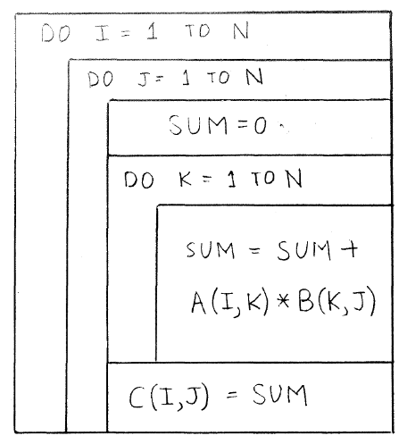
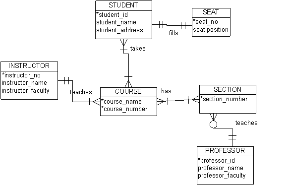

The following notes are largely based on Steirn (1999) and Scott Page's Coursera class on Model Thinking.
Note that there's a lot of overlap between depicting a system and implementing one; between depicting a process and improving it; between modeling a problem and analyzing it.
Models of a process, system, or interface can have a general form (e.g. entity relationship diagram) but be executable in different notations (e.g. Chen, crow's foot).
The representation of a system needs to include contextual metadata clarifying the date and/or version it describes.
Per Scott Page, modeling:
Steirn (1999) organizes models
Types of diagrams, per Smartdraw.com (n.d.):
AKA decision flow charts, logic flow charts, and logical decision flow charts. Flow charts model decisions, a type of process. Languages that model processes more generally can also represent decisions.
The basic elements of flow charts are available in MS Visio's language level diagrams stencil:
AKA Chapin charts, structograms, structured flowcharts. Per Nassi and Shneiderman (1973), "We propose a flowchart language whose control structure is closer to that of language amenable to structured programming:"

All ERDs capture the entities in a system, along with their attributes and interrelationships. Per Dybka (2014), there are many notation styles:
This is a notation that describes the optionality/modality/participation and cardinality/multiplicity of a relationship, so it can be used within other modeling systems. Crows-foot notation annotates relationships with the symbols:

The Gane-Sarson and Yourdon-Coad notations are slightly different, but both depict the flow of data through a system using the following elements:
OO models show inheritance as well as decisions, relationships, and processes. Per Steirn (1999), several earlier methods (Shlaer/Mellor, Rumbaugh's Object Modeling Technique (OMT), Booch) were subsumed by UML in 1997.
See notes on UML.
Ambler, S. (n.d.). Agile models distilled: Potential artifacts for agile modeling. Retrieved from http://www.agilemodeling.com/artifacts/
Ambler, S. (n.d.). UML 2 activity diagrams: An Agile introduction. Retrieved from http://www.agilemodeling.com/artifacts/activityDiagram.htm
Dybka, P. (2014). ERD notations in data modeling. Vertabelo Academy. Retrieved from http://www.vertabelo.com/blog/technical-articles/comparison-of-erd-notations
Meadows, D. H., & Wright, D. (2008). Thinking in systems: A primer. White River Junction, Vt.: Chelsea Green Pub.
Nassi, I., & Shneiderman, B. (1973). Flowchart techniques for structured programming. SIGPLAN Not., 8 (8), 12–26. Retrieved from https://www.cs.umd.edu/hcil/members/bshneiderman/nsd/1973.pdf
Smartdraw.com. (n.d.). Diagrams. Retrieved from https://www.smartdraw.com/diagrams/?exp=ste
Stiern, K. (1999). Comparison of diagramming methods. Retrieved from http://www.umsl.edu/~sauterv/analysis/dfd/DiagrammingMethods.html
{kind=link}
{kind=link}
{kind=link}
{kind=link}
{kind=link}